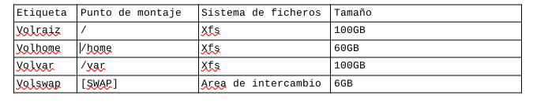

Instalación Debian 11
Preparación
Para empezar he booteado un usb con la imagen de Debian 11 con la herramienta Rufus. Mi portátil es un Lenovo Thinkpa L15 con 1TB de almacenamiento y 40GB de RAM. Antes de realizar la instalación he dejado libre la mitad de mi disco de 1TB. Es decir, 500GB del disco están destinados a Windows 10, por lo que para la instalación de Debian 11 tengo disponibles l500GB de espacio libre.
Instalación
Para realizar la instalación de Debian 11 con LVM en mi portátil he realizado los siguientes pasos:
-
Con el instalador gráfico, tras seleccionar idioma, configurar la red, usuario y contraseñas, realizo el particionado de discos de forma manual. Tengo en cuenta el espacio en el que está la partición de Windows 10 y en la que tenía el anterior Debian que borraré para utilizar ese espacio libre. Una vez borrado, selecciono el espacio libre para crear la partición de /boot. Esta es una partición primaria creada al principio con tipo de datos xfs. A esta partición le he dado 2GB.
-
La partición EFI, al igual que la anterior, la he creado al principio y es una partición primaria. A esta partición le he dado 100MB que es el mínimo y suficiente para que el sistema arranque.
-
A continuación creamos el grupo de volúmenes. En ‘Configurar el gestor de volúmenes lógicos (LVM)’ creo un grupo de volúmenes con el espacio libre disponible. En este grupo de volúmenes he ido creando cada volumen lógico. Le he asignado un nombre y un tamaño a cada uno además del grupo de volúmenes en el que se incluirá. Una vez creados los volúmenes lógicos se le asigna el punto de montaje correspondiente y el sistema de ficheros. Como sistema de ficheros he elegido xfs ya que trabaja más rápido con archivos grandes. A continuación muestro una tabla con cada volumen creado:

- A volraiz le he dado 100GB ya que es donde irá el sistema, su configuración y donde se guardarán las librerías.
- En volhome estarán las cuentas de usuario y los documentos de éstos. En principio con los 60 GB debería ser suficiente para lo que voy a utilizar el sistema, pero en el caso de que me quede corta siempre puedo ampliar este volumen.
- A volvar le he dado 100GB, ya que será donde se almacene el sistema de ficheros. Los ficheros log pueden llegar a ocupar mucho.
- A la swap le he dado 6GB porque pienso que más es innecesario, y con una ram de 40GB los 6GB son suficientes. [La swap tenía pensado dejarla como una partición normal fuera del grupo de volúmenes, pero se me pasó hacerla y no dejé espacio libre suficiente, por lo que la metí como volumen lógico.]
- Cuando se termina el particionado se escriben los cambios en el disco y se continua con las instalación como normalmente. Se instala el sistema base, se configura el gestor de paquetes desde la iso y en la selección de programas he elegido el entorno de escritorio GNOME y Xfce. Este último lo he instalado ya que me es más cómodo de usar que GNOME.
Problemas y soluciones
Tras la instalación, no me reconoce la wifi. Cuando intento instalar el driver me da el problema de que mi usuario no se encuentra en el fichero sudoers. Para arreglar este problema he hecho lo siguiente:
- En /etc/group buscar la línea de sudo y añadir mi usuario, en este caso ‘arantxa’.
Solucionado el problema anterior paso a instalar el driver necesario para que funcione la tarjeta wifi. Con lspci -v compruebo el nombre del driver necesario que en mi caso es el siguiente:
Kernel driver in use: iwlwifi
Lo busco con apt search iwlwifi y me da como resultado firmware-iwlwifi. Lo instalo con apt install firmware-iwlwifi y tras reiniciar ya debería funcionar la tarjeta de red wifi.
** En mi caso al intentar instalar el firmware no me aparece, por lo que he tenido que añadir en /etc/apt/sources.list las listas contrib y non-free.